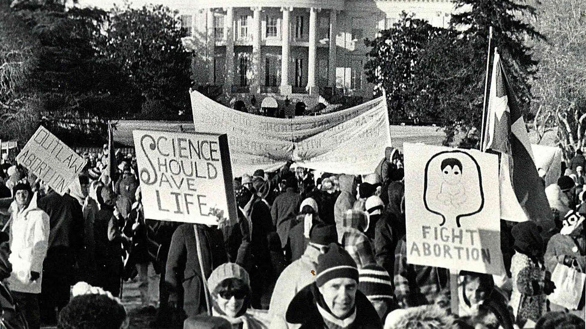

A 1980s March for Life protest in front of the White House (Courtesy of March for Life). Credit: theatlantic.com
Science Is Giving the Pro-life Movement a Boost
The first time Ashley McGuire had a baby, she and her husband had to wait 20 weeks to learn its sex. By her third, they found out at 10 weeks with a blood test.
Technology has defined her pregnancies, she told me, from the apps that track weekly development to the ultrasounds that show the growing child.
“My generation has grown up under an entirely different world of science and technology than the Roe generation,” she said. “We’re in a culture that
is science-obsessed.”
Providing education to restore respect for life from conception to natural death. Credit: niagararegionrighttolife.ca
Providing education to restore respect for life from conception to natural death
Niagara Region Right to Life is a registered charity and educational partner that believes all human life should be protected from conception to natural death.
We work through educational means providing empirical scientific evidence and logical reasoning, to engage and empower youth to become integrated citizens
who are willing to take a stand and be an effective voice to restore respect for all human life.
Abortion ends the life of a human embryo or fetus. Is this killing morally permissible? Or is it an injustice?
More than 150 years ago, a Boston physician named Horatio R. Storer pointed to the heart of the issue. "The whole question," he observed, "turns on ...
the real nature of the foetus in utero."
Does the unborn child have a right not to be intentionally killed? Does she matter like we matter? Does she count as one of us?
Yes, she does. This position is based on a fact of science and a principle of justice.